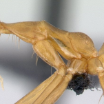
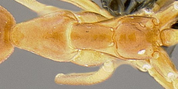

" value="A. gracilipes" onclic="location.href='anoplolepis.html';">
PN MN
" style="cursor:help;">dview:
-
- PP
- PN

AntWeb

AntWeb
-
- PP
- PN

" value="Prenolepis" onclic="location.href='prenolepis.html';">
:
HTL/CW < 1,50
:
SL/CL > 1,13
MN PP
HTL/CW < 1,50
SL/CL > 1,13